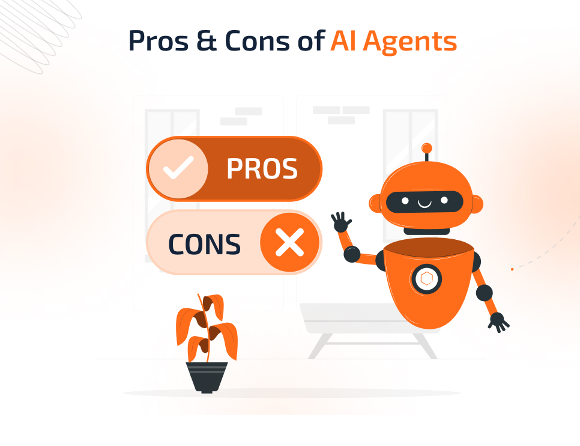
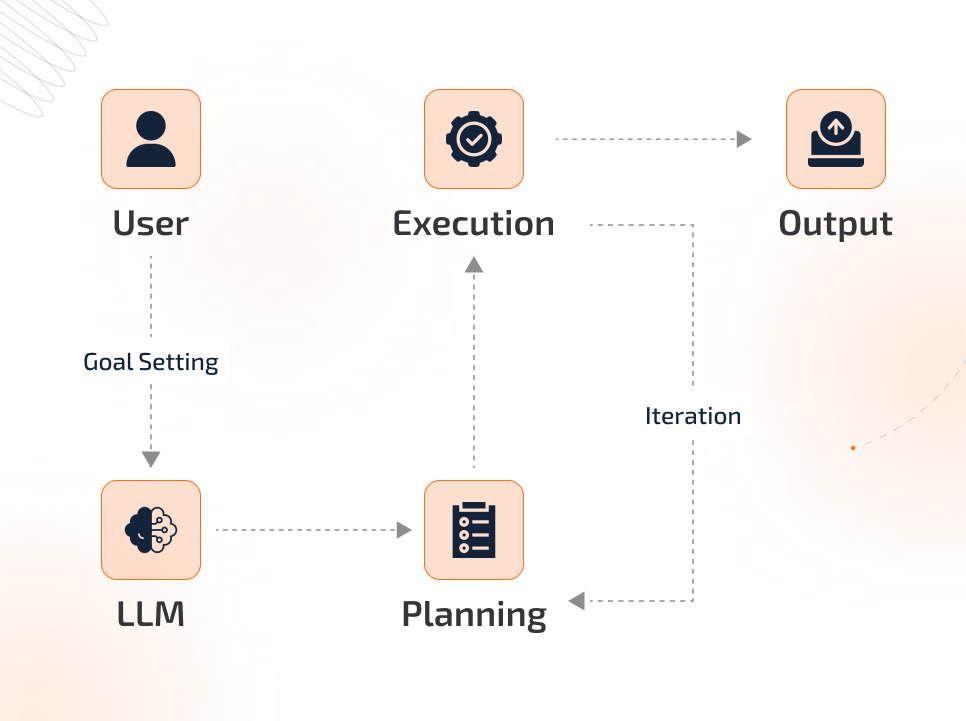
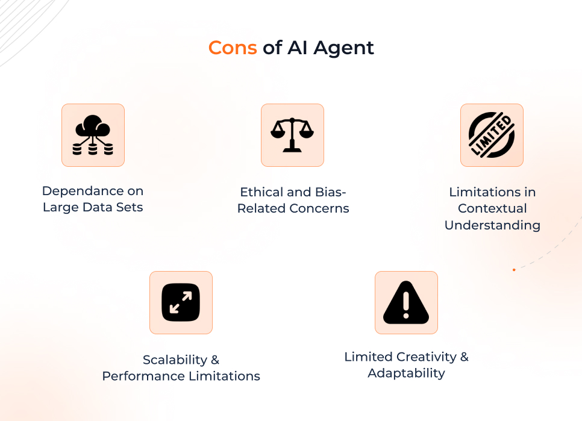

AI agents have rippled a revolution in the way companies interact with their customers. However, it’s important to understand the pros and cons of AI agent so that you don’t get any wanted surprises along the way. The fact is that AI is a powerful technology and like any powerful technology you need computing power to make it work. Some of the major problems you may face will be related to your overheads for running the AI agent. But all is not lost but these issues are just barriers that you can break and use the full potential of conversational AI.
In this blog we will cover everything you need to know about the pros and cons of AI agent and how you can reduce your overhead and minimize the hiccups you may have to face when you use them in your business.. AI agents have the potential to help you grow your businesses significantly by streamlining your customer experience. Read on to learn more and let’s transform your business with AI agents.
Let’s Take A Deep Dive Into The Pros & Cons of AI Agent Before You Take The Leap For Your Business
Computer scientists have been experimenting with chatbot development since the 1960s. Yes, it might be surprising but as humans we have always been fascinated with how we can use technology to make our lives easier. Before we talk about the pros and cons of AI agent we have to understand why these pros and cons exist. So let’s take a look at what these are and figure out how you can implement AI agents in your business effectively.
The Early Days of Chatbots
The chatbots of the early days are not AI agents like we know today. These were chatbots that could provide predefined answers to specific questions. While they can mimic conversations to an extent they lack true understanding. Funnily enough we still see these chatbots today in places like customer support for example. They don’t provide much of a “customer experience” and the pros and cons of AI agent like this are obvious but these early solutions were truly innovative for their time. They paved the way for what we know today as AI agents.

This scenario took a shift when NLP or Natural Language Processing emerged and this was very revolutionary. NLP meant that systems could now process natural human language just the way we to each other everyday. The early versions of this were still basic compared to what we have today but in the 90s this took a great shift learning from the pros and cons of AI agent in the 60s and 80s. Now you could write long sentences into chatbots and depending on the keywords you’ve used in your sentence the chatbot could provide you with meaningful responses.
As you can imagine this was very revolutionary and with the emergence of voice inputs many companies like the ones in the telecom industry started effectively using these “AI agents” for customer support operations. The AI agents we know of today are quite different from this because they work on complex AI models. So to understand the pros and cons of AI agent in a modern setting let’s look at how these AI agents work.
Taking A Closer Look Into What is an AI Agent and How They Work
Modern AI agents work on artificial intelligence and machine learning technology. To be more specific they work using a combination of machine learning or ML and natural language processing or NLP. At the core of AI technology are artificial neural networks which are computer programs that mimic real human neurons. This combination of artificial neurons is capable of producing meaningful responses from human inputs. When it comes to the pros and cons of AI agent it shouldn’t be surprising that they require a lot of power because the human body and brain require a lot of power to function.

What you need to know is that AI uses the 3 major technologies we spoke about earlier; NLP, ML and DL. NLP is used to process natural language because you want the AI agent to be able to understand when a regular person converses with the chatbot. However it does not mean that NLP is just for understanding natural language. The pros of NLP in the context of pros and cons of AI agent is that it can give chatbots the capabilities to do text analysis, sentiment detection, language translation and question answering.
Now machine learning is another story because it gives AI agents the ability to learn from past interaction. You may already see why ML is so powerful because you don’t have to use predefined responses anymore. For example if you have trained the AI model with sufficient data even if you don’t know what questions your users are going to ask your chatbot can still generate relevant responses. The pros here in terms of pros and cons of AI agent in this context is that as the user continues to have a conversation with your chatbot it can learn from the user’s queries. If you’ve noticed, ChatGPT constantly asks if its responses are relevant. This kind of feedback will help you improve the accuracy of your AI agent.
How AI Agents Understand Conversations
We now get into the territory of how AI agents get smarter because that’s what Deep Learning is about. In the context of AI agents you will get a lot of sequential data because that’s how human beings converse. The pros for this in terms of the pros and cons of AI agent is that with deep learning your AI agent can understand your user’s entire conversation. If you’ve used ChatGPT before you can see what I mean because you can send multiple prompts with different inputs and the AI agent can understand the entire context of the conversation.
In the NLP scene deep learning models take the form of recurrent neural networks and transformers. In the AI agent development process recurrent neural networks or RNNs are widely used because of how effective they are with sequential data. Transformers on the other hand are used in AI agent development because this gives your AI agent the ability to consider the whole sentence instead of certain keywords. But now let’s talk about the pros and cons of AI agent and later on we will see how we can overcome those challenges and create a fluid customer experience.
Discover The Pros of AI Agents
In the earlier parts of our conversation we spoke about what AI agents are and how they function on a technical level. Now let's see what the benefits of AI agents are because that’s what we want. In today’s business and technological landscape AI agents have a lot to offer businesses in terms of transforming and improving the way they engage with and serve their customers.

1. Increased Efficiency and Automation
When it comes to the pros and cons of AI agent the benefit of automating repetitive tasks has to be considered. Strategically, this is not to reduce your workforce or reduce the money you spend on human agents but to free up time for your human resources. By doing this your human agents can focus on the strategic tasks such as actually solving customer problems, quickly gathering feedback to make your products and services better and to find new business opportunities. You can easily delegate tasks like data entry, email sorting, customer support and scheduling to AI agents and seamlessly increase your operational efficiency making it a great pro in the pros and cons of AI agent.
Let’s just say that you have a product or service and it has a customer support system in place. Since the AI agent can work 24/7 you can quickly answer user queries even if they are located in different time zones. This is just one example of many such benefits.
2. Improved Decision Making Through Data Analytics
In the world of business especially today your ability to make decisions directly relates to the amount of data you have. However, when there’s vast amounts of data in your hands it becomes nearly impossible for you to properly analyze the data and take proper informed decisions. When we look at the pros and cons of AI agent this fact cannot be overlooked. AI agents are not like humans AI agents and have the ability to process large amounts of data and furthermore find various patterns using this data. This can be game changing especially for larger businesses because their operations will also be on a larger scale and it can become difficult to make decisions with the amount of data that they have.
AI agents can easily provide you with predictive insight where they can analyze historical data and predict future trends. If we take finance as an example AI agents can forecast the movements in the stock market and help investors make informed decisions. We are already seeing products like this all around us and many large financial institutions are using AI agents today for this purpose making it a big pro in the pros and cons of AI agent. The other benefit is the ability to conduct real time monitoring especially round the clock. These AI agents can provide you with actionable insights related to your business by monitoring the key metrics like conversions, return on ad spend and much more.
3. Enhanced Customer Experience
This is not a surprise because this is the first that comes into most people’s minds when they hear about AI agents. Through natural language processing and machine learning you can create generative AI chatbots that can handle diverse user queries. When it comes to the pros and cons of AI agent this definitely comes as a big benefit because you can quickly answer users queries 24/7 and enhance your customer engagement and satisfaction. It also has a lot to do with personalization because if you take Spotify’s music recommendation system as an example they give you tailored recommendations for music based on your mood. AI agents have come a long way in improving customer engagement and will be a great tool for businesses.
4. Cost Savings
This should also be a no brainer but there are caveats you need to consider which we will talk about in just a while. When it comes to the pros and cons of AI agent the cost savings have to be seen as a big benefit. Using AI agents allows you to significantly cut down your operational cost because many repetitive tasks that were once done by humans can now be carried out using AI agents. But the other thing that many people overlook is that when you cut down the human agents it also saves up on the resources they may need to use which includes training employees and onboarding new ones.
Now we come to the caveat but we will explore that in detail when we talk about the cons. Which is that in the pros and cons of AI agent one of the pros is that since most AI agents available for businesses are cloud based you don’t have to pay for any expensive hardware or maintenance of these hardware.
5. Scalability
AI agents are very much scalable because of the fact that they are computer programs. Yes they mimic humans but they don’t require rest and sleep like humans do which means that even if you have fluctuating engagement from your customers the AI agent can easily handle these requests simultaneously. What’s more is that even the computing power they use depends on the scale of the tasks that they are doing. The pros and cons of AI agent can be easily understood in this context with an example. Let’s say that you have an e-commerce store and it's the holiday season or discount sales like Black Friday. Many e-commerce websites implement AI agents for handling customer requests during this time without hiring additional staff which eliminates a lot of the bottlenecks associated with this process.
A Close Look Into The Cons of AI Agents For Businesses
Like any piece of technology there are a few cons to AI agents along with the pros which is important to understand if you’re a business. In our blog about the pros and cons of AI agent lets now look at some of the cons you should keep in mind as a business.

1. Dependance on Large Data Sets
Just like humans use our knowledge to carry out tasks in our everyday lives AI agents rely heavily on data and if you want your AI agent to produce meaningful responses you have to train it on relevant data. If we take the healthcare industry as an example data is a tricky thing to handle because regulations like HIPAA prevent access to private data. The same goes for domains like legal. The con here in terms of the pros and cons of AI agent is that if you don’t have sufficient annotated data your AI agent might not be able to understand the context of user queries well and that could affect the customer experience. Biases in data is also a concern especially for healthcare and legal because if the user interacts with an AI agent trained on biased or low quality data it could lead to catastrophic consequences.
2. Ethical and Bias-Related Concerns
Part of this is the data these AI agents are trained on and part of this is related to the data that you use to train your AI agent. The con here in terms of pros and cons of AI agent is that AI agents trained on biased data can amplify the biases in the responses they generate. Bias Amplification is a real phenomenon and it can lead to undesirable outcomes in a real world setting. The other thing might come as a bit of a shock for you because it's about transparency. You would be inclined to think that since AI models are computer programs we can predict how they provide responses. But in reality most deep learning models are a bit of a mystery to even computer scientists and their decision making processes are difficult to interpret.
3. Limitations in Contextual Understanding
Unlike humans who are evolved with advanced cognitive functions even advanced AI systems are not that intelligent and this is a con when it comes to the pros and cons of AI agent. AI agents may not be able to understand extremely nuanced conversations like humans can and they can only imitate life to a certain extent. For example sarcasm may be difficult to understand for AI agents and any user queries that contain sarcasm may not be interpreted by the AI system properly. In a real world scenario let's say that a customer gets a defective product and they’ve used sarcasm to explain their problem. Even multi-agent systems may not be able to truly understand the context of these requests although with continued training and advancements in the field of study this gap is getting smaller and smaller.
4. Scalability and Performance Limitations
One of the cons in the pros and cons of AI agent is the scalability because even though modern AI models are cloud based systems it is not always very straightforward to scale them especially when users depend and volumes are high. Although AI agents can handle fluctuating user demands the problem lies in the architecture. You need to have scalable architectures in place that adapt with user demand or else it could lead to latency issues. This could be seen as friction in the customer experience which is what you are trying to solve in the first place. Although you can make autoscaling systems it might be out of your reach as a business if you’re looking for affordable AI agent development
5. Limited Creativity and Adaptability
Yes this is a con in the pros and cons of AI agent. You might be thinking about AI art generators and other generative AI tools that create amazing looking pictures, images and text but the fact is that AI agents work using patterns and rules. They may be highly efficient in carrying out specific tasks but they are not capable of creating entirely new ideas. Regardless of the training data they are given the amount of data that humans consume is just vast. We as humans also have nuances, preferences and moods which are completely out of the scope of AI. Another scenario in the pros and cons of AI agent where AI agents may be lacking is in novel scenarios. If it’s an incident that has not happened before there will be no data for it and AI agents will not be able to provide meaningful responses. In these cases human intervention becomes essential.
Let’s Learn More About How AI Agents are Transforming Industries Worldwide
Regardless of what anyone says and no matter what limitations AI agents have it is undeniable that AI agents are transforming businesses all over the world. If we look at the pros and cons of AI agent we can see that these systems have allowed businesses to reduce their overhead costs, manage repetitive tasks better and provide customers with better customer experience. Although AI agents were initially used to customer support today they are capable of doing a diverse range of tasks seamlessly.
The telecom industry has been using AI agents for a long time in the form of chatbots and IVR systems which is unavoidable given the number of customers they handle on a daily basis. This has had a larger effect on the market because other businesses understood the pros and cons of AI agent and the customers have been familiarized with these systems.
AI agents have also been working in stealth mode at many financial institutions for decision making, managing portfolios, fraud detection and many more such tasks that once needed dedicated and expensive human agents. Many financial institutions like banks have already implemented customer facing AI agents for things beyond just customer support requests and now alert users of any malicious transactions in their name. These kinds of innovations have played a great role in streamlining the customer experience and showing the pros and cons of AI agent.
What Could Be The Ethical Considerations of Using AI Agents
The ethical considerations for AI agents are mostly related to the technology itself and we are constantly trying to mitigate these issues so that businesses can embrace the technology. One of the major ethical considerations and something we have already touched base on is the biases and fairness equation. Just like humans, AI agents also work using the data they are trained on and biased data can be a problem. In the pros and cons of AI agent the con of bias amplification where biased data can be amplified by the AI agent has been a concern and this can be mitigated by ensuring good quality data.
Another concern is privacy and data protection because it is a double edged sword. AI models require you to train them on vast amounts of data and this can be a problem because to have a personalized experience the AI model also needs personal data of users. This can be mitigated by using high tech encryption methods and properly informing users about how your business uses their personal data. This is a concern among the pros and cons of AI agents.
Accountability is also a concern because AI agents are essentially computer programs and not human beings who can take accountability of their actions. The legal framework is not clearly in place and considering that the outputs of AI models in terms of how they make decisions is not always clear it becomes difficult to bring accountability into the picture. However, regulators are constantly working on building a framework for AI and governments are deeply researching AI and the pros and cons of AI agent to make things smoother for businesses. The other step that you can take is to keep proper logs of the AI agent’s activities and also to not implement AI agents where humans can take decisions that involve someone’s life in the case of litigation and surgeries.
Some Closing Words About The Pros and Cons of AI Agent
Like any new technology AI is also evolving and we have to understand how these agents work and the pros and cons of AI agents to make sure that they can benefit businesses. However, it is undeniable that AI agents have transformed and are transforming businesses globally and providing better customer experience for the users. Before embarking and thinking about how to build AI agent it is important to understand how they work and how you can properly use them in a business setting. It is also important that you prioritize quality over the price tag because choosing cheap AI agent development over high quality solutions can be catastrophic to your business.
Technical Architect
At Sparkout Tech Solutions, we believe in the power of collaboration. I take pride in fostering a team culture that encourages open communication, knowledge sharing, and continuous learning. In the ever-evolving tech landscape, I am committed to staying at the forefront of industry trends. This commitment allows us to deliver solutions that not only meet but exceed our clients' expectations